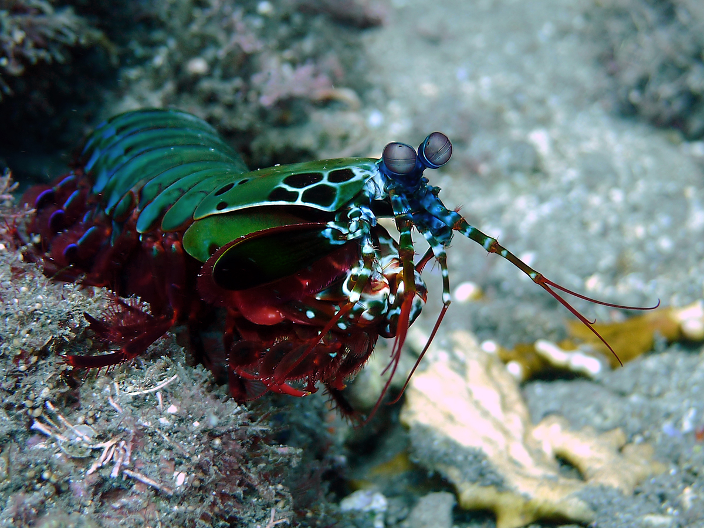

Fatos sobre o Stomatopoda
O stomatopoda (Odontodactylus scyllarus, poplarmente chamado de tamarutaca) é uma ordem de crustáceos que agrupa cerca de 400 espécies, caracterizadas principalmente pela morfologia da segunda pata torácica, que é modificada em apêndice subquelado, lembrando uma pata de louva-a-deus. Medindo entre 15 e 30 centímetros, elas costumam ser encontradas próximo à costa de mares tropicais e subtropicais e são predadoras letais que se alimentam de caranguejos, camarões, moluscos e peixes.
Visão
Esses animais possuem o mais complexo sistema de visão de cores do
mundo animal, pois enxergam 12 cores primárias, correspondentes aos
12 pigmentos distintos presentes em sua retina.
Nossos olhos possuem três tipos desses receptores - que correspondem
à luz azul, verde e vermelha -, que nos permitem perceber o espectro
de cores que vemos. Os cães contam com apenas dois tipos de cones
(verde e azul), e é por isso que eles vêm tons de azul, verde e um
pouco de amarelo. Muitos anfíbios, répteis, aves e insetos possuem
quatro tipo de cones, o que significa que espécies dessas classes
conseguem ver cores que o nosso cérebro é incapaz de processar.
Algumas espécies específicas de borboletas e possivelmente pombos
possuem cinco cones de percepção de cor, o que aumenta ainda mais a
quantidade de pigmentos que eles são capazes de perceber. O sistema
de visão dos estomatópodes possui doze cones sensíveis à luz e
outros quatro que filtram a luz (16 cones no total), o que lhes
permite ver cores polarizadas e imagens multiespectrais.
Como cada cone pode ver cerca de 100 cores, os estomatópodes são
capazes de ver 1024 cores, ou seja, 1 septilhão de cores. Em
comparação, o olho humano vê 106 cores, ou seja, 1 milhão de cores
apenas. A visão dos estomatópodes é sensível à luz ultravioleta, mas
ainda é desconhecido se ela pode distinguir a luz infravermelha.

As Patas Superpoderosas
Elas possuem duas patas superpoderosas na parte dianteira que,
quando acionadas, são capazes de proferir um golpe com a mesma
aceleração de um disparo de uma do calibre 22 e
força de impacto de 60 kg/cm3! E isso em menos de
1/3.000 de segundo, o que significa que, se um humano pudesse
acelerar os braços com 1/10 desse poder, seria possível lançar uma
bola de baseball em órbita ao redor da Terra.
As patas se movem tão depressa que a água próxima a elas chega a
ferver — em um fenômeno chamado supercavitação —, além de provocar
uma onda de choque capaz de matar a presa mesmo que a lagosta
maldita erre o golpe. Assim, com esse movimento, as tamarutacas
capturam suas presas, mesmo que contem com carapaças protetoras.

Vídeo sobre a tamarutaca:
Referências Bibliográficas
Wikipedia: Stomatopoda
Mega Curioso: Mantis: Conheça a Lagosta-Boxeadora, o bicho mais
desgraçado dos mares!
Ask Nature: How Bubbles Super‑Power the Mantis Shrimp’s Punch